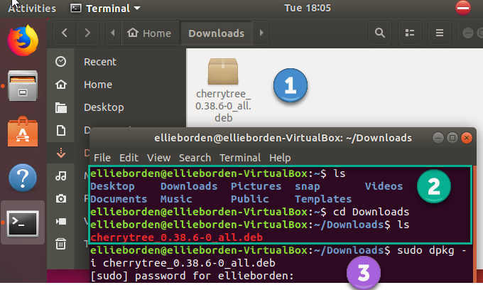

Cherrytree User Manual
Cherrytree User Manual
Introduction
Cherrytree is a free and open source, hierarchical, note-taking application. It is capable of storing text, images, files, links, tables, and executable snippets of code. This application is under active development. Details regarding updates can be found in the changelog.
If you have questions please ask in the forum, or visit this webpage to provide feedback.
About This Manual
This manual was written for Cherrytree version 0.38.6. Please check the Cherrytree website for the latest version.
Get Involved
New contributors are welcome!
Development
The git repository can be found here.
The current version of Cherrytree requires:
- python2
- python-gtk2
- python-gtksourceview2
- p7zip-full
- python-dbus
- python-enchant
- python-chardet
After cloning, run in the top folder ./cherrytree or python2 cherrytree.
Development is currently focused on porting from Python to C++/GTKmm. These changes are located on the master branch within the ‘future’ directory. The latest, stable release can also be found on the master branch. The pygi branch is a discontinued attempt to port to the python bindings for GTK3. It failed due to python-gtksourceview2 being deprecated.
Testing
If you find a bug, please check to see if it has already been reported within the project’s index of issues. If the error is unreported, please create a new issue providing as much detail as possible.
If needed, here is a short guide on writing a proper GitHub issue.
Writing
The Cherrytree user manual is currently under revision and is maintained here.
Translation
Donations
Join the Cherrytree Supporters!
Donations are appreciated and can be made from the Cherrytree homepage.
Installation
Cherrytree is available for Linux and Windows.
Installing on Fedora and other Red Hat derivatives
- Download the latest installer with a ‘.rpm’ extension from the downloads webpage.
- Open a terminal and navigate to the directory where your installer is located.
- Type the following command, replacing “cherrytree.rpm” with the name of your installation file:
sudo rpm -Uvh --force cherrytree.rpm. Provide your password when prompted to begin the installation.
Installing on Ubuntu and other Debian derivatives
Option One: Ubuntu Software
Cherrytree can be found in the Ubuntu Software library. Open Ubuntu Software and search for Cherrytree, then select the application and click ‘install’. Provide your password when prompted to begin the installation.
Option Two: Command Line
- Download the latest installer with a ‘.deb’ extension from the downloads webpage.
- Open a terminal and navigate to the directory where your installer is located.
- Type the following command, replacing “cherrytree.deb” with the name of your installation file:
sudo dpkg -i cherrytree.deb. Provide your password when prompted to begin the installation. 
Installing on Windows
Download and run the latest installer with an ‘.exe’ extension from the downloads webpage.
Select a language and click ‘Next’.

Accept the license and click ‘Next’.

Select a directory for the application to be installed and click ‘Next’.

Select ‘Create a desktop shortcut’ if you wish to have a shortcut. Click ‘Next’.

Review then provided summary, then click ‘Install’ if you are ready to proceed.

Click ‘Finish’ to complete the installation.
Note: If you have a previous version of Cherrytree installed, an error may occur when trying to overwrite “dbus-daemon.exe”. If so, please skip the overwrite and restart your computer, then try again.
Quickstart
Content
Create Nodes
Content
Content
Insert an Image
Content
Save Your Notes
Content
Export the Document
Content
Navigation
Content
Editor
Content
Tree View
Content
Content
Content
Nodes
Content
Creating Nodes
Content
Choosing a Document Type
Content
Plain Text Content
Rich Text Content
Syntax Highlighting Content
Editing Nodes
Content
Deleting Nodes
Content
Text
Content
Objects
Images
Content
Drag and drop content
Copy and paste content
Toolbar content
Tables
Codebox
content
The following Codebox formats are available:
- ada
- asp
- awk
- bibtex
- boo
- c
- c-sharp
- cg
- changelog
- chdr
- clisp
- cmake
- cpp
- css
- d
- desktop
- diff
- docbook
- dosbatch
- dot
- dpatch
- dtd
- eiffel
- erlang
- fcl
- forth
- fortran
- fsharp
- gap
- gettext-translation
- glsl
- go
- groovy
- gtk-doc
- haddock
- haskell
- haskell-literate
- html
- idl
- ini
- java
- js
- latex
- libtool
- lua
- m4
- makefile
- mallard
- markdown
- markdown-extra
- msil
- nemerle
- nisi
- objc
- objective-caml
- ocl
- octave
- ooc
- pascal
- perl
- php
- pkgconfig
- powershell
- prolog
- python
- python3
- r
- rpmspec
- ruby
- rust
- scala
- scheme
- sh
- sparql
- sql
- t2t
- tcl
- texinfo
- vala
- vbnet
- verilog
- vhdl
- xml
- xslt
- yacc
- yaml
Executing
Files
Content
Links
Content
Anchors
Content
Table of Contents
Content
Time Stamps
Content
Special characters
Content
Searching
Content
Settings
Content
Contributors
Cherrytree is written and maintained by Giuseppe Penone.
Development:
- Julian Stirling
- Emilie V.
- Jean-Philippe Fleury
Writing:
- Robert Boudreau
- Ellie Borden
Translation:
- Pavel Fric (Czech)
- Vincenzo Reale (Italian)
- Klaus Becker (French)
- Frank Brungräber (German)
- Giuseppe Penone (Italian)
- Marcin Swierczynski (Polish)
- Andriy Kovtun (Russian, Ukrainian)
- Daniel MC (Spanish)
- Channing Wong (Chinese Simplified)
- Vinicius Schmidt (Brazilian Portuguese)
- Patrick Vijgeboom (Dutch)
- Luuk Geurts (Dutch)
- Seda Stamboltsyan (Armenian)
- Ferhat Aydin (Turkish)
- Piyo (Japanese)
- Zygis (Lithuanian)
- Henri Kaustinen (Finnish)
- Delphina (Greek)
- Erik Lovrič (Slovenian)
Artwork:
- OCAL
- Zeltak
- Angelo Penone
All email addresses can be found in Cherrytree by selecting ‘Help > About > Credits’ from the menu.
Supporters
- Andy Lavarre (United States) donated €350 {android, creation/modification per node + search filter}
- Miguel Latorre (Spain) donated €240
- DistroWatch.com (International) donated €200
- Alan M. (United States) donated €100
- Mario (Austria) donated €100
- 1001bricks (France) donated €80 {custom keyboard shortcuts}
- Michael Moyer (United States) donated €70
- Charles Leis (United States) donated €65
- Rene Gommes (Italy) donated €55
- Samir Derzic (Germany) donated €55
- Stuart Krivis (United States) donated €55
- Barbara Buri (Switzerland) donated €50
- Ger de Gooijer (Netherlands) donated €50 {mark node in the tree with bold or color}
- Lisardo Sobrino (Spain) donated €50
- Manuel Pacheco (Spain) donated €50
- Rudy Witt (Canada) donated €50
- Steve Davis (United States) donated €50
- Valentina Ermolova (Russia) donated €47
- Édipo Gonçalves (Brazil) donated €45
- Ted (Germany) donated €45 {same tree visible twice for drag n drop}
- James Brady donated €43,24
- Andrew Marquis (United Kingdom) donated €40
- Jack Downes (United States) donated €40
- Sylvain Pasche (Switzerland) donated €40
- Thomas Ludwig (Germany) donated €40
- William Haschke (United States) donated €40
- Juan Rivera (Spain) donated €35
- Marian Förster (Germany) donated €35
- Glen Garfein (United States) donated €31,25
- Jt Spratley (United States) donated €31
- Christoph Rottleb (Germany) donated €30
- Fabien Perdu (France) donated €30 {keyboard shortcut for subscript and superscript or a way to configure them}
- Giulio Achilli (Italy) donated €30
- Ivar Christopher (United States) donated €30
- Jan Axelsson (Sweden) donated €30 {nodes icons or colors and nodes separator}
- Jesse Sloane (South Korea) donated €30
- Johnathan Moseley (United States) donated €30
- Josh Hanson (United States) donated €30 {sub item pressing the TAB key in lists}
- Luis Ribeiro (Portugal) donated €30
- MC Merchants (United States) donated €30
- Michael Jabbour (Austria) donated €30
- Miguel Gestal (Spain) donated €30
- Ravinderpal Vaid (United States) donated €30
- Steven Rockefeller (United States) donated €30
- Sebastian Prodan (Germany) donated €26
- Michael Turner (United States) donated €25,99
- Bruce Ashford (United Kingdom) donated €25
- Claus Otterpohl (Germany) donated €25
- Georg Fellmann (Germany) donated €25
- James Lin (United States) donated €25
- John DeOrian (United States) donated €25 {bulleted list indentation hierarchical, Integrate LaTeX (mathematical formulas)}
- Miguel Vilar (Switzerland) donated €25
- Soren ONeill (Denmark) donated €25
- Wolfgang See (Germany) donated €25
- Jaroslav Polacek (Czech Republic) donated €22,22
- Andreas Strömdahl (Sweden) donated €20
- Andrew Golovanov (United States) donated €20
- Anthony Miller (United Kingdom) donated €20
- David Butcher (United Kingdom) donated €20
- David Condray (United States) donated €20
- Emmanuel Chantreau (France) donated €20
- Evan Tran donated €20
- Fabio rahamim (Israel) donated €20
- Francesco Zaniol (Australia) donated €20
- Frank Dehmel (Germany) donated €20
- Frank Nash donated €20
- Gaurav Pal (United Kingdom) donated €20
- Gene Clem (United States) donated €20
- Geoffrey Munn (United Kingdom) donated €20
- Hermann Grell (Germany) donated €20
- J Walters (United Kingdom) donated €20
- Jaroslav Svobboda (Czech Republic) donated €20
- Joerg Materna (Germany) donated €20
- John McCoy donated €20
- John Parkin (United Kingdom) donated €20
- José Martínez (Spain) donated €20
- Ken Dangerfield (Canada) donated €20
- Laurent Soulet (France) donated €20
- Lee Rottler (United States) donated €20
- Michael Matney (United States) donated €20
- Randall Raziano (United States) donated €20
- Rich Edwards donated €20
- Robert Johansson (Sweden) donated €20
- Roberto Diaz donated €20
- Roger Rowles (Australia) donated €20
- Rudolf Waltenberger (Austria) donated €20
- Rudy Witt (Canada) donated €20
- Timothy DeCant (United States) donated €20
- Zigurds Gavars (Latvia) donated €20 {better table cells support}
- Gerry Williams (United States) donated €17,86
- Christopher Davenport (United States) donated €16
- Christopher Brazill (United States) donated €15
- Hannes Mertl (Austria) donated €15
- Hans van Meteren (Netherlands) donated €15
- Istvan Cebrian (Portugal) donated €15
- Jason Fossen (United States) donated €15 {tabs}
- John Duchek (United States) donated €15
- John Grant (United Kingdom) donated €15
- John Reynolds (United States) donated €15
- Joshua Chalifour (Canada) donated €15
- Kees Wiebering (Germany) donated €15
- Klaas Vaak (Netherlands) donated €15
- Lukas Golombek (Germany) donated €15
- Marwan Nader (Canada) donated €15
- Patricia Bonardi (Netherlands) donated €15
- Robert Madore (Canada) donated €15
- Duncan M.K. (United Kingdom) donated €12,5
- Bennett Z. Kobb (United States) donated €12,39
- Dandi Soft (Italy) donated €12
- Administrateur (France) donated €10
- Aleksandrs Demcenko (Latvia) donated €10
- Alexandr Blashin (Germany) donated €10
- Aviv De Morgan (Israel) donated €10
- Balint Fekete (Hungary) donated €10
- Benoît D’Angelo (France) donated €10
- Bruno Pietzsch (Germany) donated €10
- Chipmunk Software & Systems (United States) donated €10
- Christian Saad (Germany) donated €10
- Claus Karstensen (Denmark) donated €10
- Cosmin Saveanu (France) donated €10
- Daniel Toro (Chile) donated €10
- Darren Wood (United States) donated €10
- David Allinson (United Kingdom) donated €10
- Dennis Roberts (United States) donated €10
- Derek Perry (Canada) donated €10
- Dinu Catalin (Romania) donated €10
- Eric Jourdan (France) donated €10
- Eva Rothwangl donated €10
- Glenna Drake (United States) donated €10
- Gregory Bruccoleri (United States) donated €10
- Guillaume Michaud (Canada) donated €10
- iCore effective GmbH (Germany) donated €10
- Jack (Croatia) donated €10
- Jesus Arocho (United States) donated €10
- Joachim Manke (Germany) donated €10
- Kåre Jensen (Denmark) donated €10
- Lachlan Brown (Australia) donated €10
- Larry Apple (United States) donated €10
- Laura Haglund (United States) donated €10
- Leonardo Gonçalves (Brazil) donated €10
- M A Richard (United States) donated €10
- Marcelo Bovo (Brazil) donated €10
- Marilena Marrone (Italy) donated €10
- Matthew Minnix (United States) donated €10
- Mika Kujanpää (Finland) donated €10
- Mustafa Kabakcioglu (Turkey) donated €10
- Nenad Jemuovic donated €10
- Oscar (Mexico) donated €10
- Passionate Awakenings (United States) donated €10
- Paul Saletan (United States) donated €10
- Petr Bartel (Czech Republic) donated €10
- Philippe Missout (France) donated €10
- Ranjit Singh (Germany) donated €10
- Ravi Kumar (India) donated €10
- Robert Harris (United States) donated €10
- Ronald Cameron (United States) donated €10
- Rudy Richardson (United States) donated €10
- Ryan Riedel donated €10
- Silton Tennis (United States) donated €10
- Stanescu Ionut (New Zeland) donated €10
- Stefano Landi (Canada) donated €10
- Stridor Media (Germany) donated €10
- Tai Wei Feng (Australia) donated €10
- Thomas Gruschwitz (Germany) donated €10
- Thomas Locquet (France) donated €10
- Thomas Polomski (Germany) donated €10
- Uwe Ebers (Germany) donated €10 {android version}
- ZebraMap (United States) donated €10
- James Skahan (United States) donated €9 {shortcut to leave the codebox}
- David Severn (United States) donated €8,82
- Daniel Siefert (Germany) donated €8
- Graham Osborne (United Kingdom) donated €8
- Richard Trefz (United States) donated €8
- Kastytis Belazaras (Lithuania) donated €7,77
- Winfred McCarty (United States) donated €7,66
- Mark Kasper donated €7,25
- Angus Rose (United Kingdom) donated €7
- Gerard Dubrulle (France) donated €7
- Siliconninja donated €7 {individual pages/nodes instead of one document file for cloud syncing}
- Tara Stewart (United States) donated €6
- Thomas Bondois (France) donated €6
- Nick Cross (United Kingdom) donated €5,80
- Alexander Eckert (Germany) donated €5
- Alexander Lackner (Germany) donated €5
- Benjamin Westwood (United Kingdom) donated €5
- Daniel Elias (Brazil) donated €5
- Dylan Goodman donated €5
- Gerben Tijkken (Netherlands) donated €5
- Gloria See donated €5
- Ivo Grigull (Germany) donated €5
- Karsten Kulach (Germany) donated €5
- Katarzyna Górnisiewicz (Poland) donated €5
- Luca Bevilacqua (Italy) donated €5
- Marian Hanzel (Slovakia) donated €5
- Mario Tosques (Italy) donated €5
- Marius Van der Merwe (Australia) donated €5
- Massimo Beltramin (Italy) donated €5
- Mathias Huber donated €5
- Max Greisen (Belgium) donated €5
- Maxime Lahaye (United States) donated €5
- Michael Schönwälder (Germany) donated €5
- Michelle Thompson (United States) donated €5
- Jiri Kouba donated €5
- Olivier Le Moal (France) donated €5
- Open Source Solutions (Bulgaria) donated €5
- Paul Robinson (United Kingdom) donated €5
- Piotr Swadzba (Ireland) donated €5
- Sol Hübner (Germany) donated €5
- Tal Liron (United States) donated €5
- Telmo Quiterio (Brazil) donated €5
- The Dick Turpin Road Show (United Kingdom) donated €5
- Лев Выскубов (Russia) donated €5
- Jarius Elliott (United States) donated €4,74
- Daniel Rusek (Czech Republic) donated €4
- Zachary Peterson (United States) donated €3,64
- Frank Maniscalco (Canada) donated €3,50
- Hugo McPhee (Australia) donated €3,26
- Tomáš Chalúpek (Czech Republic) donated €3
- Frank Lazar (Germany) donated €2
- Виталий Волков (Russia) donated €2
License
This program is free software; you can redistribute it and/or modify it under the terms of the GNU General Public License as published by the Free Software Foundation; either version 3 of the License or (at your option) any later version.
This program is distributed in the hope that it will be useful, but WITHOUT ANY WARRANTY; without even the implied warranty of MERCHANTABILITY or FITNESS FOR A PARTICULAR PURPOSE. See the GNU General Public License for more details.
You should have received a copy of the GNU General Public License along with this program; if not, write to the Free Software Foundation, Inc., 51 Franklin Street, Fifth Floor, Boston, MA 02110-1301, USA.